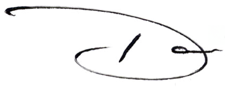

Ensuring integrity in the age of algorithms. Bridging the gap between traditional journalism and the AI future.
Get in TouchI am a media executive with a career defined by transformation. Having led major initiatives in both linear television and digital news, I currently oversee Ethics and Standards for a major American news organization.
My work sits at the critical intersection of storytelling and responsibility. As artificial intelligence reshapes how information is created and consumed, I am focused on establishing the guardrails that maintain trust without stifling innovation.
I believe the future of news isn't just about technology—it's about the human values we code into it.